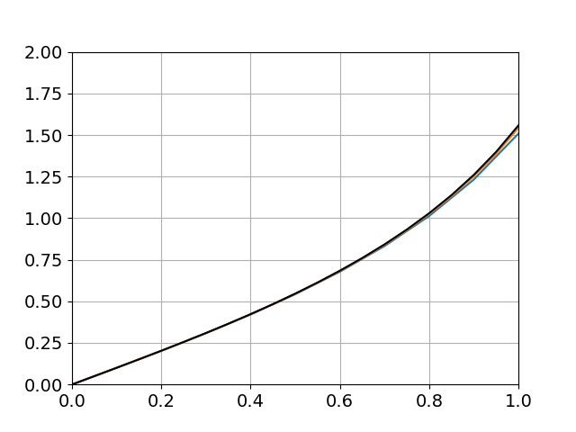

COMPUTER PROBLEMS 6.7
\(\def\ds{\displaystyle} \)
1 The Python program exmultistep is run with step size
\(h=0.1\) and with the differential equation in ydot. The results
are as follows.
\[\text{ (a)}\ \ \begin{array}{ccc}
t_i&w_i&\text{error}\\
0.0& 1.0000& 0\\
0.1& 1.0050& 0\\
0.2& 1.0200& 0\\
0.3& 1.0450& 0\\
0.4& 1.0800& 0\\
0.5& 1.1250& 0\\
0.6& 1.1800& 0\\
0.7& 1.2450& 0\\
0.8& 1.3200& 0\\
0.9& 1.4050& 0\\
1.0& 1.5000& 0\\
\end{array} \ \ \ \ \text{ (b)}\ \
\begin{array}{ccc}
t_i&w_i&\text{error}\\
0.0& 1.0000& 0.0000\\
0.1& 1.0005& 0.0002\\
0.2& 1.0020& 0.0007\\
0.3& 1.0075& 0.0015\\
0.4& 1.0191 & 0.0025\\
0.5& 1.0390& 0.0035\\
0.6& 1.0698 & 0.0048\\
0.7& 1.1146 & 0.0065\\
0.8& 1.1773& 0.0088\\
0.9& 1.2630& 0.0121\\
1.0& 1.3788& 0.0168\\
\end{array}\ \ \ \ \text{ (c)}\ \
\begin{array}{ccc}
t_i&w_i&\text{error}\\
0.0& 1.0000& 0.0000\\
0.1& 1.2320& 0.0017\\
0.2& 1.5386& 0.0141\\
0.3& 1.9569& 0.0368\\
0.4& 2.5355& 0.0762\\
0.5& 3.3460& 0.1443\\
0.6& 4.4967& 0.2621\\
0.7& 6.1533& 0.4661\\
0.8& 8.5720& 0.8214\\
0.9& 12.1548& 1.4443\\
1.0& 17.5400& 2.5455\\
\end{array}\] \[\text{ (d)}\ \
\begin{array}{ccc}
t_i&w_i&\text{error}\\
0.0& 1.0000& 0.0000\\
0.1& 1.0000& 0.0000\\
0.2& 1.0001& 0.0002\\
0.3& 1.0013& 0.0012\\
0.4& 1.0070& 0.0033\\
0.5& 1.0243& 0.0075\\
0.6& 1.0658& 0.0150\\
0.7& 1.1534& 0.0296\\
0.8& 1.3266& 0.0611\\
0.9& 1.6649& 0.1400\\
1.0& 2.3483& 0.3700\\
\end{array}\ \ \ \ \text{ (e)}\ \ \begin{array}{ccc}
t_i&w_i&\text{error}\\
0.0& 1.0000& 0.0000\\
0.1& 1.0913& 0.0001\\
0.2& 1.1673& 0.0023\\
0.3& 1.2354& 0.0032\\
0.4& 1.2970& 0.0036\\
0.5& 1.3534& 0.0038\\
0.6& 1.4055& 0.0039\\
0.7& 1.4542& 0.0039\\
0.8& 1.4998& 0.0039\\
0.9& 1.5428& 0.0038\\
1.0& 1.5836& 0.0038\\
\end{array} \ \ \ \ \text{ (f)}\ \
\begin{array}{ccc}
t_i&w_i&\text{error}\\
0.0& 1.0000& 0.0000\\
0.1& 1.0001& 0.0000\\
0.2& 1.0002& 0.0002\\
0.3& 1.0013& 0.0007\\
0.4& 1.0050& 0.0014\\
0.5& 1.0131& 0.0022\\
0.6& 1.0282& 0.0032\\
0.7& 1.0528& 0.0039\\
0.8& 1.0890& 0.0044\\
0.9& 1.1383& 0.0044\\
1.0& 1.2011& 0.0040\\
\end{array}\]
3 The Python program exmultistep can be run with the
ab2step function replaced by the unstable two-step method.
The resulting approximations follow:
\[\text{ (a)}\ \ \begin{array}{ccc}
t_i&w_i&\text{error}\\
0.0& 0.0000& 0.0000\\
0.1& 0.0050& 0.0002\\
0.2& 0.0213& 0.0002\\
0.3& 0.0493& 0.0005\\
0.4& 0.0916& 0.0002\\
0.5& 0.1474& 0.0013\\
0.6& 0.2222& 0.0001\\
0.7& 0.3105& 0.0032\\
0.8& 0.4276& 0.0020\\
0.9& 0.5510& 0.0086\\
1.0& 0.7283& 0.0100\\
\end{array} \ \ \ \ \text{ (b)}\ \
\begin{array}{ccc}
t_i&w_i&\text{error}\\
0.0& 0.0000& 0.0000\\
0.1& 0.0050& 0.0002\\
0.2& 0.0187& 0.0000\\
0.3& 0.0413& 0.0005\\
0.4& 0.0699& 0.0004\\
0.5& 0.1082& 0.0016\\
0.6& 0.1462& 0.0027\\
0.7& 0.2032& 0.0066\\
0.8& 0.2360& 0.0134\\
0.9& 0.3363& 0.0297\\
1.0& 0.3048 & 0.0631\\
\end{array}\ \ \ \ \text{ (c)}\ \
\begin{array}{ccc}
t_i&w_i&\text{error}\\
0.0& 0.0000& 0.0000\\
0.1& 0.0200& 0.0013\\
0.2& 0.0700& 0.0003\\
0.3& 0.1530& 0.0042\\
0.4& 0.2435& 0.0058\\
0.5& 0.3855& 0.0176\\
0.6& 0.4645& 0.0367\\
0.7& 0.7356& 0.0890\\
0.8& 0.5990& 0.2029\\
0.9& 1.4392& 0.4739\\
1.0& 0.0394& 1.0959\\
\end{array}\]
5 To plot the solutions, the exmultistep program can be altered by
replacing the Adams-Bashforth Two-Step
Method with the Adams-Bashforth Three-Step Method. In addition, order-four Runge-Kutta
should be used as a startup method. The plots are shown below for (a) \(y_0 = 0\) and
(b) \(y_0 = 1/2\). The highest curve is the exact solution \(y(t) = \tan(t + \arctan y_0)\), the middle curve is the
result with \(h = 0.05\), and the lowest curve uses \(h = 0.1\).


9 To plot the solution, the predcorr program
can be altered slightly as follows: Replace the Adams-Bashforth Two-Step
Method with the Three-Step Method, and replace the Adams-Moulton One-Step
Method with the Two-Step Method. In addition, order-four Runge-Kutta
should be used as a startup method. The approximate solution on
\([0,2]\) is indistinguishable from the correct solution in the plot
below.